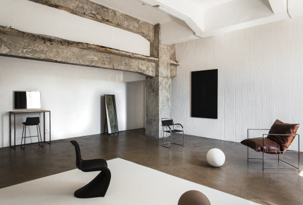
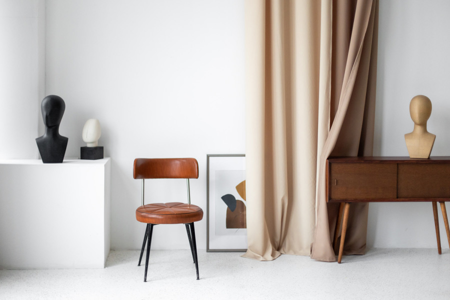
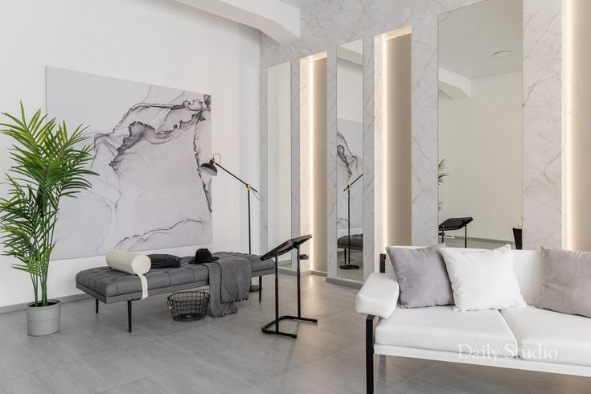
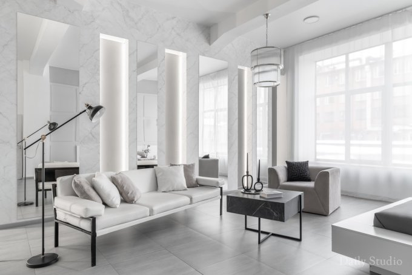
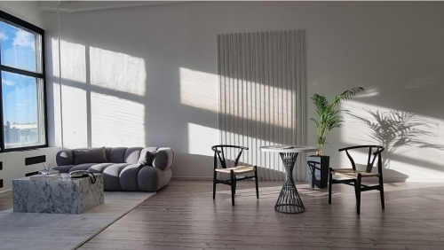
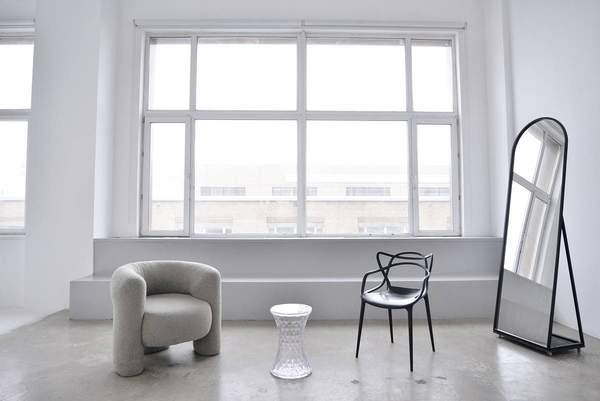

Чистота линий и гармония пространства
Минимализм — это философия «меньше значит больше», где каждая деталь тщательно продумана, а пространство дышит свободой. Стиль, пришедший из японской эстетики и современной архитектуры, характеризуется лаконичностью, функциональностью и визуальной чистотой.
В нашей студии преобладают светлые тона, гладкие поверхности, геометрические формы и отсутствие лишних деталей. Монохромная палитра, натуральные материалы и скрытое освещение создают атмосферу спокойствия и умиротворения. Пространство организовано по принципу зонирования без физических перегородок.
Идеально для портретной съемки, предметной фотографии, коммерческих проектов и создания образов, где главный акцент — на человеке или продукте. Нейтральный фон позволяет полностью сосредоточиться на объекте съемки, а ровное освещение подчеркивает естественную красоту. Профессиональная световая техника обеспечивает безупречное качество изображения.






Если вы планируете фотосессию в студии, при записи указывайте, какую из локаций вы предпочитаете
Записаться